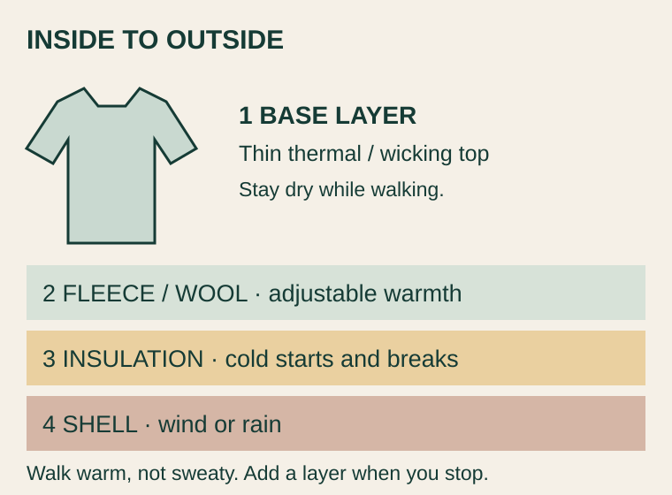

Pack for cold mornings in Bumthang and Phobjikha, and warmer afternoons in Punakha. Removable layers are more useful than one heavy coat.
Checked 9 October 2026. A general preparation guide, without personal details or booking records. Photos are references; clothing diagrams are original illustrations.
CLOTHING · ADD OR REMOVE AS NEEDED
Four layers—not all four all day

A layering illustration, not a recommended brand or product.
Base: a wicking or thin thermal top. Avoid staying in sweaty cotton.
Middle: fleece or wool for adjustable warmth.
Insulation: a packable down or synthetic jacket for cold starts, evenings and breaks.
Shell: wind and rain protection when needed—not a compulsory fourth layer.
Dress for the activity
Crane watching / standing at a festival
Thermal top, fleece and insulated jacket; thermal leggings if needed. Bring a hat, gloves and warm socks. Add a shell in wind.
Tiger’s Nest uphill
Wicking top and comfortable trousers; carry your jacket. Remove a layer before getting sweaty and put it back on when you stop.
Punakha sunshine / the car
Light long sleeves and trousers, with a jacket within reach. Do not leave all your warm clothes behind because midday feels warm.
Temples / dzongs
Cover shoulders and knees. A tidy sleeved or collared top and trousers are easy choices. Wear clean socks for cold floors when shoes come off.
Rooms / farmhouses
Warm sleepwear and socks. Whether thin pyjamas are enough depends on room heating, not just the outdoor temperature.
Temperature reference: monthly averages, not a forecast
Bumthang15.5 / 1.3°CCold mornings and nights
Phobjikha13.2 / −0.3°CHat, gloves and warm socks
Paro16.9 / 4.7°CCold starts; warm while walking
Thimphu19.7 / 3.2°CLarge day–night difference
Punakha23.9 / 11.4°CNoticeably warmer days
High / low: November monthly averages reported by Bhutan Weather from NCHM 1996–2017/18 climate data. Late November, mountain passes and shaded areas may be colder. Check the forecast shortly before departure. Climate table · Packing reference
Footwear: broken-in walking or hiking shoes with good grip. Take care on downhill paths, temple steps and frost. Bring indoor slippers, lip balm, moisturiser, sunscreen and sunglasses.
CLOTHING · TRADITIONAL DRESS
Gho & kira: know the parts, then ask for help
Visitors do not need to wear national dress every day. Ask your guide or host to help with the first fitting and any ceremonial scarf; do not choose official-rank colours yourself.
Ema datshi and rice · Shashi Bellamkonda, 2008 Smithsonian Folklife Festival. A reference photo, not a booked restaurant meal. Wikimedia Commons · CC BY 2.0. Downloaded thumbnail.
No meat; fish is OK; vegetables preferred
Explain the restriction for the traveller concerned—not necessarily the whole group.
Clarify whether meat stock, minced meat and animal fat must also be avoided.
Cheese, butter and eggs are not meat, but confirm personal preferences separately.
Ask for mild dishes and chilli / ezay on the side. Fish should be cooked; it need not be requested at every meal.
A brewery visit can be about the process without drinking. Ara is alcohol, not tea.
1 · Ema datshi
Chillies are the main ingredient, not just seasoning. Try a small portion; check the kitchen’s recipe rather than assuming it is meat-free.
2 · Kewa / shamu datshi
Potato or mushroom and cheese. An approachable first dish, though it may still contain chilli. Request mild and pair with rice.
3 · Bhutanese red rice
A nutty-tasting staple, good with vegetables and cheese stews. An everyday meal can be as interesting as a special dish.
4 · Puta
Bumthang buckwheat noodles. Ask about a vegetable version, stock, oil, eggs and chilli.
5 · Khuley
Bumthang buckwheat pancakes. Ask for them freshly made if available and let your host suggest accompaniments.
6 · Vegetable momo / hoentay
Check the dumpling filling. Hoentay are associated with Haa, not specifically Bumthang: try them if available without making a detour.
7 · Suja + zaow
Suja is salty butter tea, not sweet milk tea. Start with a small cup; zaow is roasted rice. Mention dairy restrictions.
8 · Herbal tea / brewing
Ask about ingredients, drying, blending and packaging. A tasting need not include alcohol or acceptance of health claims.
What can meat-eaters try separately?
Jasha maroo (chicken) or phaksha paa (pork). Keep dishes and serving utensils separate; vegetables cooked in meat stock are not vegetarian.
Food safety: choose freshly cooked food served hot and sealed bottled or reliably treated water. If water safety is uncertain, avoid ice and raw salads. Avoid unpasteurised dairy, peel fruit yourself and wash hands before eating. General precautions—not a claim that Bhutanese food is unsafe. CDC food and water advice
ACCOMMODATION · WARM NIGHTS MATTER
Ask four questions before arrival
Hotels / farmhouses
Heating: what type, and can it run overnight?
Bedding: extra blankets, electric blanket or hot-water bottle?
Bathroom: private or shared, and is hot water limited?
Meals: can mild and meat-free dishes be arranged in advance?
Farmhouse facilities may be basic. Confirm heating, Wi-Fi, laundry and hairdryers rather than assuming. Bring slippers, earplugs and a small torch.
Hot-stone bath
Confirm the cost, time, privacy, towels and changing space. Do not assume it is included.
Test the water and ask for adjustments. Get out if uncomfortable.
Bring suitable bathing / spare clothes according to the venue. Dry off and dress warmly afterwards.
Avoid alcohol beforehand. Ask your doctor first if you have a condition affecting heat-bath safety.
TRANSPORT · CASH, ROADS AND BAGGAGE
Prepare for the practical details
Mountain roads / walks / domestic flights
Agree on rest, toilet and photo stops. Stops do not reduce actual driving time.
If prone to motion sickness, choose a suitable seat and look ahead. Ask a pharmacist or doctor about medication.
Walk slowly at higher elevations and tell your guide if unwell. Do not force yourself to keep up.
Drukair domestic economy normally allows 20 kg checked per person and 5 kg hand baggage, 45 × 35 × 20 cm. Your issued ticket and airline confirmation take precedence.
An international allowance does not automatically apply domestically. Arrange any luggage storage in Paro with the operator first.
Keep documents, regular medication, a warm layer and chargers in your cabin bag. Mountain flights can be weather-affected.
Tipping is not a fixed bill. Ask the operator. Himalayan Dream suggests US$10–15 for the guide and US$5–10 for the driver per small group per day: US$150–250 total for 10 service days, not per person. This is one operator’s reference, not a national tariff. Give separately at the end and choose according to service and budget. Tipping reference
PACKING · PER PERSON
A practical list, not a whole wardrobe
Clothing and shoes
2–3 wicking / thermal tops; 1 pair of thermal leggings.
Photo credits and licences appear below each image. People pictured are not associated with this trip. The two clothing / temple SVG illustrations are original and work offline.